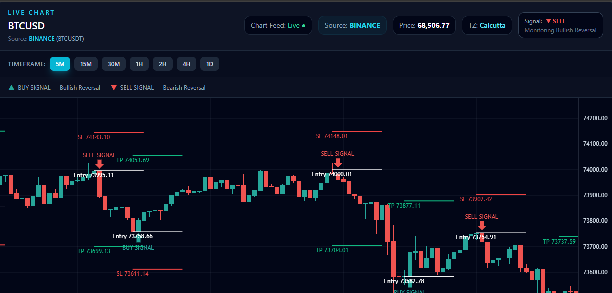
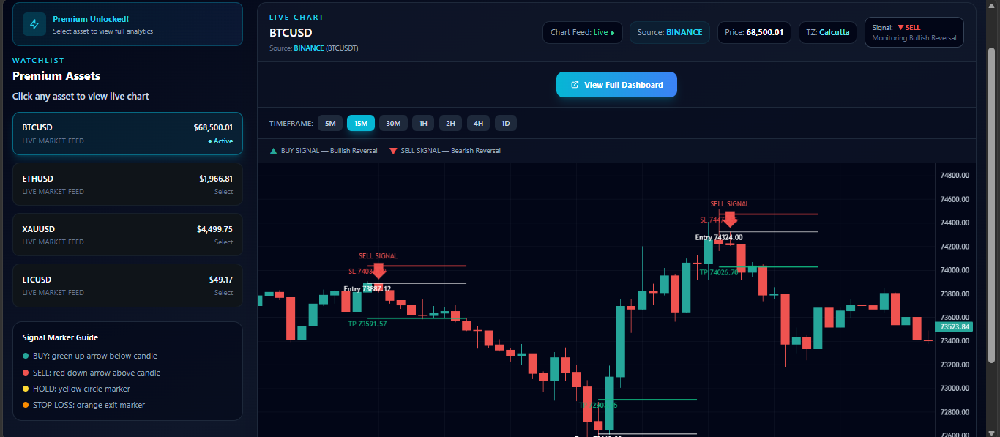
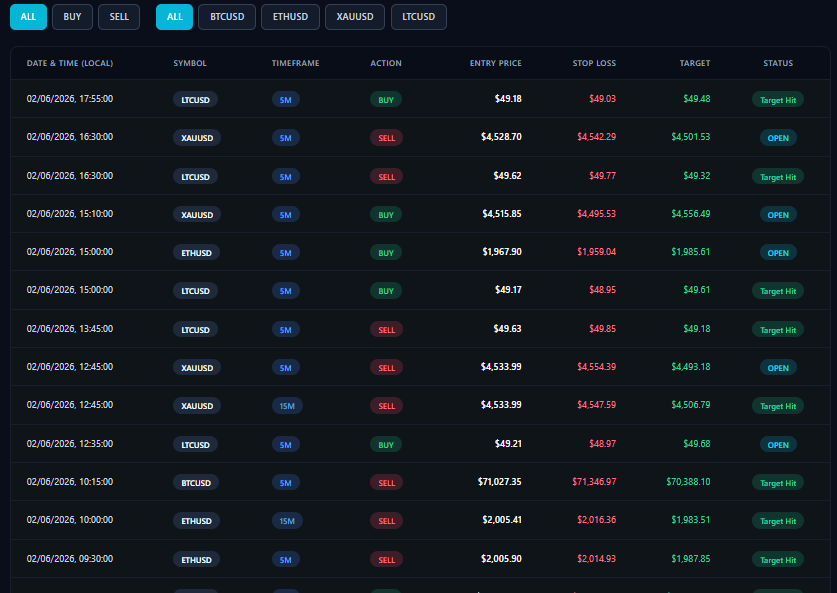

Professional cryptocurrency trading platform powered by advanced reversal detection algorithms. Get real-time BUY and SELL signals for Bitcoin, Ethereum, Ripple, and Litecoin across multiple timeframes.

Know what works—before risking capital.
Catch moves early without the noise.
See where price is most likely to react.
Advanced indicators, clean chart overlays, and real-time signal generation. SmartRisk FX helps you simplify your analysis, validate your ideas, and trade with confidence.
Instead of chasing complexity, you get one focused system that supports how you actually trade—from spotting a setup to refining it and executing with discipline.
Ditch the noise. SmartRisk surfaces high-probability reversal zones with clean visuals and clear signals that respect your strategy.
Advanced TradingView Pine Script algorithms identify high-probability entry zones in real-time with precision accuracy.
Every signal displays exact entry price, SL, and TP levels directly on your chart for disciplined, rule-based trading.
Confirm signals across 5M, 15M, 1H, 4H, and daily charts to build confluence before entering any trade.
Professional-grade interface with real-time charts, multi-asset watchlist, and instant signal analytics—all in one place.
Live WebSocket connection to Binance streams price updates and signal generation with zero latency, 24/7.
Track BTC, ETH, XAU, and LTC with live prices, signal status, and one-click access to any chart.
BUY and SELL signals appear directly on your chart with clear visual markers, entry zones, and trend bias.


Every signal generated is logged with full trade details for complete transparency and performance validation.
Review every generated signal with entry price, stop-loss, target, and current status—all timestamped and filterable.
Filter by asset, timeframe, and action to analyze your strategy, identify patterns, and refine your edge.
See which signals hit target, which are still open, and your overall win rate—no guessing, just data.
Simple, powerful, and automated trading signal generation in three steps
Real-time WebSocket connection to Binance streams live market data 24/7 without interruption.
Advanced reversal detection algorithm identifies high-probability entry zones automatically.
Receive BUY and SELL signals directly on your chart with entry, stop-loss, and target zones.
Watch how our AI-powered trading signals help traders make smarter decisions in real-time
Every tool you need to trade like the pros. No hidden fees. Cancel anytime.
Full access to all features
Everything you need to trade seriously
Best value for committed traders
See what our community says about SmartRisk signals
"SmartRisk signals completely changed my trading game. The reversal detection is incredibly accurate. I've seen a 40% improvement in my win rate since using it."
"The multi-timeframe analysis is a game-changer. I can confirm signals across 5M, 15M, and 1H before entering a trade. Best signal service I've used."
"As a beginner, the SmartRisk platform made crypto trading accessible. The clear BUY/SELL signals and educational resources helped me learn while earning."
"I've tried dozens of signal providers. SmartRisk is the only one that delivers consistent, actionable signals with clear risk management. Highly recommend the Pro plan."
"The signal history page alone is worth the subscription. Being able to backtest and verify every signal gives me confidence I never had before."
"Went from break-even to consistently profitable in 3 months. The reversal signals catch turning points that I used to miss completely. Lifetime plan was a no-brainer."
Get instant email notifications when new trading signals are generated for your selected cryptocurrency and timeframe. Stay informed without constantly monitoring charts.
From beginner fundamentals to advanced strategies — learn how professional traders combine technical analysis with SmartRisk signals to make confident trading decisions.
Access professional-grade SmartRisk trading signals for free. No credit card required. Join 50,000+ traders who trust our AI-powered reversal detection.